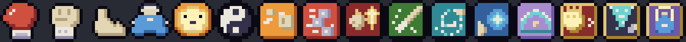
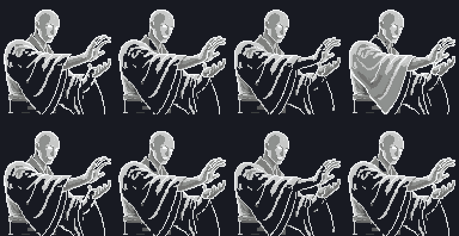
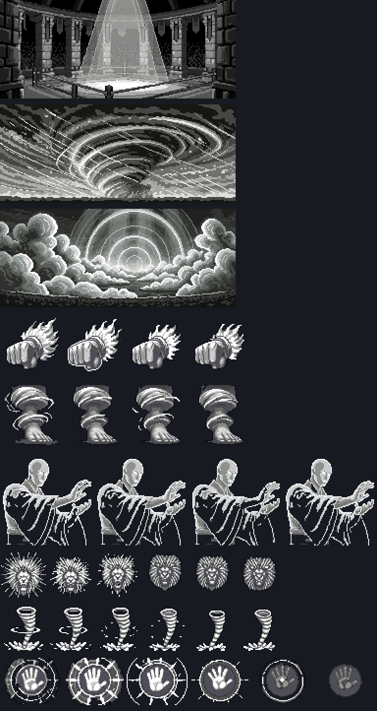

🥊 파이터 궁극기 텍스처 · 아이콘
브랜치
impl-fighter-ult (main 0.27.0 3e9e6ec3 위) · PixelLab 0회 · 검수 dev/pixel-qa (sonnet 비평, 합격선 전 항목 3+·평균 3.5)1. 확인 방법 (포트 8861)
- 궁극기: 패왕권 ★★★ · 천풍각 ★★★ · 기신 강림 ★★★ — 궁극기 띠·스킬 칸에 새 아이콘, 배경·거대 형상·막타 텍스처
- 2차 스킬: 연타 러시 · 회전 발차기 · 기막
- 직업 아이콘: 게임 오프라인 → 직업 트리(견습 기사 Lv20 전직 화면)에서 파이터 계열 칸
2. 아이콘 16개 (직업 6 + 스킬 10) — 검수 3.86 pass
이모지(OS 그림) 대신 다른 직업처럼 12×12 도트 + 잉크 외곽선. 스킬은 색 바탕 네모, 3차 궁극기는 금테 배지. 🍃 템페스트는 이미 있던 잎 아이콘.

순서: 🥊 파이터 · 👊 스트라이커 · 🦶 킥복서 · 🧘 기공사 · 🦁 챔피언 · ☯️ 그랜드마스터(기 절약 노드 겸) · 원투 · 연타 러시 · 붕권 · 돌진 발차기 · 회전 발차기 · 장풍 · 기막 · 패왕권 · 천풍각 · 기신 강림. 1차 검수 3.71 pass 뒤 지적(가부좌가 물약병처럼 보임, 발차기 둘·장풍/기막 바탕색 겹침)을 고친 판.
3. 궁극기 텍스처 (0.24.4 에 이미 있던 9장 다시 검수)
| 텍스처 | 쓰임 | 점수 | 판정 |
|---|---|---|---|
| XF01 | 패왕권 투기장 배경 | 4.14 | pass |
| XF02 | 패왕권 거대 황금 주먹 | 3.71 | pass |
| XF03 | 천풍각 폭풍 하늘 배경 | 4.0 | pass |
| XF04 | 천풍각 바람의 발 | 3.71 | pass |
| XF05 | 기신 강림 기의 구름 배경 | 4.14 | pass |
| XF06 | 기신 강림 기의 거인 | 3.29 → 3.71 | fix → pass |
| XK08 | 패왕권 막타 | 3.71 | pass |
| XK09 | 천풍각 막타 | 3.71 | pass |
| XK10 | 기신 강림 막타 | 3.57 | pass |


선택 수리로 남긴 흠: XF02 2번째 프레임 흰 테, XK08 끝 프레임 사라짐 단계 없음, XK10 2~3번째 프레임 위쪽 살짝 잘림.